금속재료기능장 (2004-04-04 기출문제)
1과목: 임의 구분
1. 온도 측정 장치 중 가장 높은 온도를 측정할 수 있는 열전쌍의 종류와 기호로 맞는 것은?
- B형(PR)
- J형(IC)
- T형(CC)
- E형(CA)
(정답률: 75%)

2. 열처리시 변형을 방지하기 위한 설명 중 틀린 것은?
- 담금질전 풀림처리를 잘하고 단조 조형재 등은 서로 대칭이 되도록 단조한다.
- 자체 무게에 의한 변형을 방지하기 위해 두지점 간의 거리는 지름의 3배 이상으로 한다.
- 담금질은 수직 등으로 급냉시키는 균일한 냉각법을 택한다.
- 임계 냉각속도가 적은 합금강을 택하는 것이 변형이 적다.
(정답률: 78%)
3. 망상 시멘타이트를 구상 시멘타이트로 만들기 위한 구상화 어닐링(spheroidizing annealing)에 사용되는 강종은?
- 아공석강
- 공석강
- 과공석강
- 망간강
(정답률: 46%)
4. 침탄용강으로 가장 적합한 것은?
- 고탄소 합금강
- 고탄소강
- 경강 합금강
- 저탄소강
(정답률: 62%)
5. 산화와 탈탄을 방지하기 위한 가장 적합한 열처리 방법은?
- 염욕처리시 수분을 첨가한다.
- 진공분위기에서 열처리한다.
- 표면을 시멘타이트로 한다.
- 산화물이 형성되도록 한다.
(정답률: 84%)
6. 강의 담금질 열처리 과정에서 나타나는 조직 중 부피 변화가 가장 큰 것은?
- Pearlite
- Sorbite
- Martensite
- Austenite
(정답률: 72%)
7. 액체 침탄법의 특징이 아닌 것은?
- 가열이 균일하고 제품의 변형을 방지한다.
- 온도조절이 용이하다.
- 산화방지로 인하여 가공시간이 절약된다.
- 침탄층이 두껍고 유독 가스발생이 없다.
(정답률: 74%)
8. 고주파 담금질 경화법에서 가열과 냉각에 의한 분류에 속하지 않는 것은?
- Preheating and quenching
- Delay quenching
- Early quenching
- Nitriding and strain quenching
(정답률: 75%)
9. 흑심 가단주철의 열처리의 주 목적은?
- 흑연화 풀림
- 취성화 가공
- 산성화 전해
- 백선화 탈탄
(정답률: 54%)
10. 금속재료의 기계적 시험에서 S-N곡선은 어떠한 종류의 시험에서 얻어진 것인가?
- 충격시험
- 크리프시험
- 슴프시험
- 피로시험
(정답률: 93%)
11. 인장시험에서 나타나는 현상 중 잘못 설명된 것은?
- 인장시험시 연신상태는 시편의 각 부분에 따라 다르다.
- 인장응력은 외측에서 최소가 되고 중심에 대하여 증가한다.
- 후크의 법칙에 의하여 응력과 변형량의 비는 탄성한계내에서는 일정값이 된다.
- 항복점이 뚜렷하지 않은 재료는 0.2% 의 영구 변형이 생기는 응력을 항복강도 또는 내력으로 한다.
(정답률: 77%)
12. 단강품의 결함 중 Ni, Cr, Mo 등을 포함한 특수강의 파단면에 발생되는 미세균열로써 파면은 은백색을 띠고 주로 강중에 수소함량이 높았을 때 생기는 결함은?
- 단조터짐 (forging burst)
- 백점 (white spot)
- 2차 파이프 (secondary pipe)
- 편석 (segregation)
(정답률: 94%)
13. 매크로 부식(macro etching)법으로 검출할 수 없는 것은?
- 미세 균열
- 편석
- 백점
- 잔류응력
(정답률: 88%)
14. 응고과정에서 현저한 방향성을 갖는 것을 이용하여 용융금속을 냉각속도, 열류(熱流)의 방향 등의 조건을 적당히 선택함으로써 단결정으로 만드는 방법은?
- Thomas 법
- Tamman 법
- Bridgeman 법
- Bragg 법
(정답률: 70%)
15. 반발에 의한 경도(HS)시험 방법인 것은?
- 쇼어 경도계
- 브리넬 경도계
- 로크웰 경도계
- 비커스 경도계
(정답률: 87%)
16. 철-탄소 평형상태도에서 공석변태에 해당되는 것은?
- A1≒723℃
- A2≒768℃
- A3≒910℃
- A4≒1400℃
(정답률: 60%)
17. 브리넬 경도시험법을 나타내는 식 중 틀린 것은? (단, P:하중, A:압흔의 표면적, d:압흔의 평균 지름, D:강구의 지름, t:압흔의 깊이)
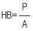
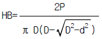
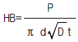
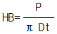
(정답률: 69%)
18. 내압에 사용되는 재료의 압축시험에 주로 적용되지 않는 재료는?
- 벽돌, 주철
- 콘크리트, 플라스틱
- 타일, 목재
- 단강품, 탄소강
(정답률: 58%)
19. 소결한 복합합금의 초경합금이 아닌 것은?
- Widia
- Tangaloy
- Carboloy
- Platinite
(정답률: 88%)
20. 주조용 알루미늄 합금의 공정형으로 나트륨(Na)개량 처리 효과가 가장 좋은 것은?
- Aℓ -Co
- Aℓ -Si
- Aℓ -Sn
- Aℓ -Hg
(정답률: 90%)
2과목: 임의 구분
21. 쾌삭황동(free cutting brass)의 쾌삭성을 향상시키는 원소로 가장 효과적인 것은?
- 아연
- 납
- 망간
- 주석
(정답률: 83%)
22. 템퍼취성(temper brittleness)이 가장 일어나기 쉬운 강은?
- Ni-Cr-Mo 강
- 탄소강
- 몰리브덴강
- Ni-Cr 강
(정답률: 47%)
23. 강중에 있는 원소로서 고온취성의 주 원인이 되는 것은?
- S
- P
- Mn
- Ni
(정답률: 70%)
24. 용액이 고용체와 반응하여 다른 고용체로 변하는 반응은?
- 공석반응
- 공정반응
- 포정반응
- 편정반응
(정답률: 64%)
25. Cu 70%-Zn 30% 인 가공용 황동으로 판, 봉, 관, 선 등을 만들어 사용하는 것은?
- Tombac
- Muntz metal
- Gilding metal
- Cartridge brass
(정답률: 50%)
26. 주철 내에서 백선화를 가장 많이 촉진하는 원소는?
- Aℓ
- V
- Si
- Cu
(정답률: 31%)
27. KSB 0896 강 용접부의 초음파 탐상 시험방법에서 경사각 탐촉자의 공칭굴절각과 A1 감도 dB 값이 맞는 것은?
- 10° , 10
- 15° , 20
- 25° , 30
- 45° , 40
(정답률: 62%)
28. 자분탐상시험에서 시험품에 자속을 발생시키는데 사용하는 전류는?
- 표피전류
- 자화전류
- 형광전류
- 충격전류
(정답률: 93%)
29. 필름과 납이 필요한 비파괴 시험법은?
- 방사선투과시험
- 초음파응력시험
- 자기침투시험
- 와류탐상시험
(정답률: 74%)
30. X-선 방사선 투과시험 장치의 요소가 아닌 것은?
- 투과도계
- 계조계
- 현상조
- 증폭기
(정답률: 67%)
31. 방사선 투과시험의 특징에 대한 가장 옳은 설명은?
- 결함의 깊이와 성분을 정확히 알 수 있다.
- 결함의 종류를 알 수 있다.
- 표면의 균열성 결함검사에 좋다.
- 시험체의 두께에 관계없이 모두 적용된다.
(정답률: 28%)
32. 적층(lamination)을 검사하는데 가장 우수한 비파괴 시험방법은?
- 방사선 투과검사
- 초음파 탐상검사
- 자분탐상 검사
- 와류탐상 검사
(정답률: 67%)
33. 다음 중 비파괴 시험법이 아닌 것은?
- X - 선 투과검사
- γ - 선 검사법
- 현미경조직 검사법
- 자분탐상법
(정답률: 90%)
34. 침투탐상 처리의 기본 4단계로 맞는 것은?
- 침투 - 현상 - 관찰 - 세정
- 세정 - 관찰 - 침투 - 현상
- 침투 - 세정 - 현상 - 관찰
- 세정 - 침투 - 현상 - 관찰
(정답률: 79%)
35. 염욕열처리작업시 주의해야 할 사항이 아닌 것은?
- 홀더는 완전한 것을 사용할 것
- 염(Salt)주변에 물을 뿌려가면서 작업할 것
- 반드시 소정의 보호구를 착용할 것
- 배기용 팬은 사용전 충분히 점검할 것
(정답률: 87%)
36. 안전점검의 가장 큰 주 목적은?
- 위험을 사전에 발견하여 시정하는데 있다.
- 법 및 기준에 적합여부를 점검하는데 있다.
- 장비의 설계를 점검하는데 있다.
- 안전사고의 통계율을 점검하는데 있다.
(정답률: 93%)
37. 비파괴시험의 안전관리 중 옳지 않은 것은?
- 방사선 동위원소 취급은 반드시 면허 소지자의 지도를 받아야 한다.
- X-선 장치는 고전압이 작동되므로 감전에 주의한다.
- 자분탐상시험시 자외선등에 의한 빛은 발생되지 않으므로 보호안경은 착용하지 않아도 된다.
- 침투탐상시험시 휘발성 가스 또는 유기 용제를 취급할 때 피부 및 기타 인체에 손상이 없도록 주의한다.
(정답률: 89%)
38. 저탄소강을 침탄하여 침탄깊이의 정도를 측정하고자 할 때 사용하는 가장 적합한 경도계는?
- 브리넬 경도계
- 비커스 경도계
- 마이어 경도계
- 쇼어 경도계
(정답률: 66%)
39. 침투탐상검사로 피검체의 표면에 묻은 녹이나 스케일 등을 없애기 위한 전처리 방법으로 가장 적합한 방법은?
- 와이어 브라쉬
- 그라인더
- 산세척
- 샌드 블랜더
(정답률: 84%)
40. 고체 침탄제가 아닌 것은?
- 목탄
- 시안화나트륨
- 코크스
- 탄산바륨
(정답률: 70%)
3과목: 임의 구분
41. 자연균열(Season crack)이 발생하는 주 원인은?
- H2 gas 에 의함
- 쌍정 (twin) 에 의함
- Slip 에 의함
- 내부응력에 의함
(정답률: 82%)
42. 설퍼프린트(Sulphur print)검사란?
- 철강 재료중의 산화망간(MnO)의 분포상태를 알아보는 검사법
- 철강 재료중의 황의 편석 및 그 분포상태를 알아보는 검사법
- 구리 및 알루미늄 결정조직 상태를 알아보는 검사법
- 구리 및 알루미늄 합금에서의 입간부식이나 방향성을 알아보는 합금
(정답률: 94%)
43. 강재의 재질 판별법인 불꽃시험에 대한 설명 중 옳지 않은 것은? (단, KS D 0218 통칙에 따른 방법임)
- 0.2% 탄소강의 불꽃길이가 500 mm 정도 되게 압력을 가한다.
- 시험하는 시험편에 탈탄층, 질화층 및 침탄층 등은 없어야 한다.
- 시험장소는 직사광이 닿지 않는 적당히 어두운 실내가 좋다.
- 바람의 방향으로 불꽃을 방출시킨다.
(정답률: 82%)
44. 방사선투과 시험용 X-선의 관전압을 높이면 어떻게 되는가?
- X-선의 파장이 길어지고 투과력은 증가한다.
- X-선의 파장은 짧아지고 투과력은 증가한다.
- X-선의 파장은 짧아지고 투과력은 저하한다.
- X-선의 파장은 길어지고 투과력은 저하한다.
(정답률: 93%)
45. 항온열처리에서 하부 베이나이트 조직만을 얻기 위한 열처리 방법은?
- 오스템퍼
- 쇼트피닝
- 클라이밍
- 세라다이징
(정답률: 87%)
46. 1 gr 의 물질을 1℃ 높이는데 필요한 열량은?
- 비열
- 비점
- 잠열
- 응고열
(정답률: 93%)
47. 열처리 로의 자동온도 제어장치가 작동하는 순서로 가장 바르게 나열된 것은?
- 비교-검출-판단-조작
- 검출-비교-판단-조작
- 조작-비교-검출-판단
- 판단-검출-비교-조작
(정답률: 74%)
48. 방사선 투과사진의 질을 점검하고 촬영한 사진이 요구하는 기준을 만족하는지를 판단하는 기준이 되는 투과도계의 설치위치로 가장 알맞는 장소는?
- 필름과 증감지 사이
- 서베이메타의 표면에 부착
- 시험체의 표면에 부착
- 검사원과 방사선원 사이
(정답률: 67%)
49. 도체 표층부의 탐상을 비접속 또는 고속으로 할 수 있으므로 봉이나 관의 자동탐상에 적합한 시험은?
- 초음파시험
- 방사선시험
- 전자유도시험
- 침투탐상시험
(정답률: 79%)
50. 어떤 스테이션에서 다음 스테이션으로 작업물을 통과시킬 수 없을 때 발생하는 것은?
- 스테이션의 생성상태
- 스테이션의 차단상태
- 스테이션의 연속상태
- 스테이션의 가동상태
(정답률: 94%)
51. 제어 시스템회로의 구성단계가 아닌 것은?
- 동력원
- 신호 처리부
- 단동운반 모터
- 신호 입력부
(정답률: 84%)
52. PLC의 구성요소가 아닌 것은?
- 메모리
- 입력모듈
- 프로세서
- 가공 스테이션메모리
(정답률: 75%)
53. 읽고 쓰기가 가능한 메모리 형태의 표시로 맞는 것은?
- CLO
- RAM
- PLM
- EEROM
(정답률: 80%)
54. leaded free cutting steel은 탄소강 또는 합금강에 무엇을 어느 정도(%) 첨가한 것인가?
- Cu 약 0.025
- Pb 약 0.25
- Sn 약 0.45
- Zn 약 0.75
(정답률: 67%)
55. 샘플링 검사의 목적으로서 틀린 것은?
- 검사비용 절감
- 생산공정상의 문제점 해결
- 품질향상의 자극
- 나쁜 품질인 로트의 불합격
(정답률: 31%)
56. 월 100대의 제품을 생산하는데 세이퍼 1대의 제품 1대당 소요공수가 14.4 H 라 한다. 1일 8 H, 월 25일, 가동한다고 할 때 이 제품 전부를 만드는데 필요한 세이퍼의 필요대수를 계산하면? (단, 작업자 가동율 80 %, 세이퍼 가동율 90 % 이다.)
- 8대
- 9대
- 10대
- 11대
(정답률: 62%)
57. 다음의 PERT/CPM에서 주공정(Critical path)은? (단, 화살표 밑의 숫자는 활동시간을 나타낸다.)
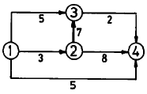
- ① - ③ - ② - ④
- ① - ② - ③ - ④
- ① - ② - ④
- ① - ④
(정답률: 57%)
58. 제품공정분석표에 사용되는 기호 중 공정간의 정체를 나타내는 기호는?
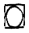
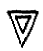
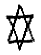
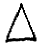
(정답률: 52%)
59. T Q C (Total Quality Control)란?
- 시스템적 사고방법을 사용하지 않는 품질관리 기법이다.
- 아프터 서비스를 통한 품질을 보증하는 방법이다.
- 전사적인 품질정보의 교환으로 품질향상을 기도하는 기법이다.
- QC부의 정보분석 결과를 생산부에 피드백하는 것이다.
(정답률: 70%)
60. 계수값 관리도는 어느 것인가?
- R관리도
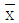
관리도- P관리도
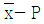
관리도
(정답률: 50%)